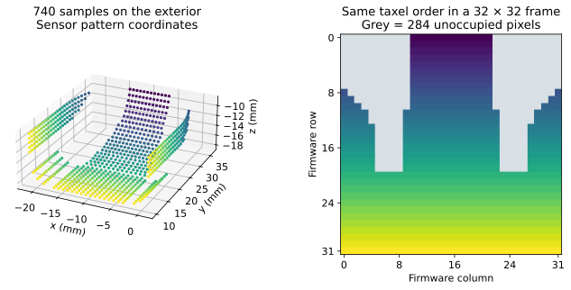

Configure taxel patterns
Use GridPatternCfg for a flat pad, CustomPatternCfg for arbitrary NPZ poses,
or Dex01PatternCfg for the DEX-01 exterior. Custom NPZ files contain poses of
shape (N,3,4), with the third axis as the surface normal, and integer
taxel2pixel pairs (row,column). dex01_pattern.npz stores the source
layout; Dex01PatternCfg supplies exterior contact sampling poses.
Their taxel order and pixel mapping are identical.
Read geometry and coordinate frames before changing a layout or mounting transform. Pattern configuration requires an initialized Isaac Sim application.


The same firmware rows color the exterior samples and frame locations. Grey pixels are unoccupied. These are layout coordinates, not force readings.
Configuration fields
Pattern |
Required or supplied fields |
|---|---|
|
|
|
NPZ |
|
Supplied exterior NPZ and resolution |
The pattern generator returns positions (T, 3), axes (T, 3, 3), and pixel
indices (T, 2). Use the matching mounting transform when selecting the
supplied exterior pattern.
Validate a custom layout
Before loading a custom NPZ into a scene, verify the file arrays:
import numpy as np
with np.load("my_pattern.npz", allow_pickle=False) as layout:
poses = layout["poses"]
pixels = layout["taxel2pixel"]
assert poses.ndim == 3 and poses.shape[1:] == (3, 4)
assert pixels.shape == (len(poses), 2)
assert np.isfinite(poses).all()
assert np.issubdtype(pixels.dtype, np.integer) and (pixels >= 0).all()
assert len(np.unique(pixels, axis=0)) == len(pixels)
axes = poses[:, :, :3]
assert np.allclose(axes.transpose(0, 2, 1) @ axes, np.eye(3), atol=1e-6)
assert np.allclose(np.linalg.det(axes), 1, atol=1e-6)
Use local positions in metres and right-handed orthonormal axes. The third
axis is the outward surface normal. Pixel indices start at zero and are
ordered (row, column). Empty cells are automatically zero-filled; choose
indices appropriate to the frame dimensions your consumer expects.